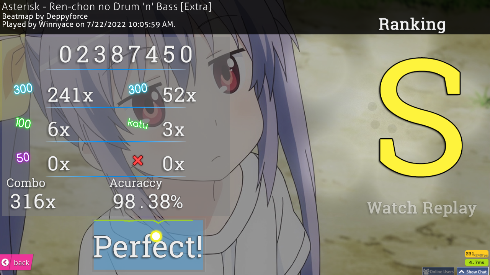

osu! improvement week 2
Hi! This is the second week of my osu! improvement journey some nice things have happened, but it’s yet another, sort of, lazy week. Let’s begin!
On Monday and Tuesday, I didn’t play at all. no excuse, really. Just laziness.
On Wednesday, I played for the first time this week. it was pretty good day I got two HR scores. Admittedly, they’re quite boring scores, but I think it’s a step in the right direction when it comes to HR. both are done on Best FriendS by sahuang. What can I say? I like the song :D
Click here for the first replay
Click here for the second replay
I’ve also played a tech, I guess I can call it, map. It’s a pretty fine score, I think.
I also got a score on a Non Non Biyori DNB Remix. It’s a 54 seconds map, but has CS6 and it’s a stream map. I’ll take that.
 I’ve also played a bit of DT on Hidamari Days. Below you’ve the score in video form.
Admittedly, these scores aren’t something impressive, but I believe it’s the step towards the right direction. by this time, I still haven’t set a specific goal, however, that changed quickly.
On Thursday, I didn’t play yet again.
On Friday, I played for a bit. Nothing much, however. I got a NoMod FC on Rave 2 Rave.
 This song is jamming! Not my score, though. My accuracy is quite bad, not gonna lie.
This song is jamming! Not my score, though. My accuracy is quite bad, not gonna lie.
On Saturday is when I finally got a goal: FC Asymmetry by Gaia, captin’s Extra difficulty. The map is pretty bog standard these days, I believe, but it’s a 6 star map, the song is pretty good, in my opinion, and I think I can get the FC. below you’ve the attempt I’ve done on Saturday.
You probably saw that I’ve a 1000+ combo score on this already.
I set that score at beginning of this month. I’ve missed at the end, due to the pressure of that FC. This is something I will need to deal with. I panic when I’m close to getting a FC. I think everybody does, actually, but some keep their focus and pull through. I think I’ll try to regulate my breathing when I’m close to getting the FC. I think that’s the best solution. Trying to hyperfocus on the map will only result in bad things.
On Sunday, I didn’t play.
This ends this week. I kinda want to play osu! right now, believe it or not. See ya next week!